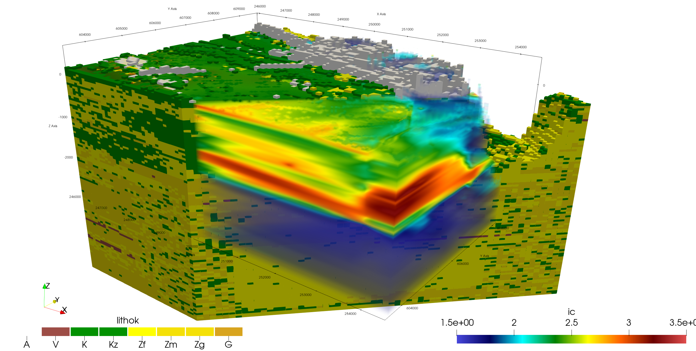

3D viewing and VTK export#
GeoST makes use of PyVista to allow the user to export data to Visualization Toolkit (VTK) format as well as interactively view data in 3D. In this example we create a simple 3D plot of some boreholes and the GeoTOP model in the area of the Utrecht Science Park (USP).
Let’s import GeoST and PyVista and load the data we are going to work with:
import pyvista as pv
import geost
# Load the boreholes from the Utrecht Science Park (USP) area
boreholes_usp = geost.data.boreholes_usp()
# Load the GeoTOP model from the OpenDAP server based on the bounding box of the boreholes
# Load = True because the area is small, so we prefer loading over streaming data
geotop_usp = geost.read_geotop_from_opendap(
bbox=boreholes_usp.header.total_bounds, load=True
)
# Load REGIS from the OpenDAP server based on the bounding box of the boreholes
regis_usp = geost.read_regis_from_opendap(
bbox=boreholes_usp.header.total_bounds, load=True
)
Downloading file 'boreholes_usp.parquet' from 'https://github.com/Deltares-research/geost/raw/main/data/boreholes_usp.parquet' to '/home/runner/.cache/geost'.
print("Boreholes:\n")
boreholes_usp
Boreholes:
Collection
header (rows, columns) : (67, 6)
data (rows, columns) : (1398, 32)
crs: RD
vertical datum: NAP height
print("Voxel model:\n")
geotop_usp
Voxel model:
<xarray.Dataset> Size: 4MB
Dimensions: (y: 13, x: 18, z: 313)
Coordinates:
* y (y) float64 104B 4.548e+05 4.548e+05 ... 4.558e+05 4.56e+05
* x (x) float64 144B 1.396e+05 1.396e+05 ... 1.412e+05 1.412e+05
* z (z) float32 1kB -49.75 -49.25 -48.75 ... 105.2 105.8 106.2
spatial_ref int64 8B 0
Data variables: (12/13)
strat (y, x, z) float32 293kB 5.07e+03 5.07e+03 5.07e+03 ... nan nan
lithok (y, x, z) float32 293kB 3.0 3.0 3.0 3.0 3.0 ... nan nan nan nan
kans_1 (y, x, z) float32 293kB 0.0 0.0 0.0 0.0 0.0 ... nan nan nan nan
kans_2 (y, x, z) float32 293kB 3.0 2.0 7.0 9.0 8.0 ... nan nan nan nan
kans_3 (y, x, z) float32 293kB 27.0 38.0 53.0 61.0 ... nan nan nan nan
kans_4 (y, x, z) float32 293kB 0.0 0.0 0.0 0.0 0.0 ... nan nan nan nan
... ...
kans_6 (y, x, z) float32 293kB 42.0 40.0 26.0 22.0 ... nan nan nan nan
kans_7 (y, x, z) float32 293kB 8.0 6.0 7.0 6.0 7.0 ... nan nan nan nan
kans_8 (y, x, z) float32 293kB 0.0 0.0 0.0 0.0 0.0 ... nan nan nan nan
kans_9 (y, x, z) float32 293kB 0.0 0.0 0.0 0.0 0.0 ... nan nan nan nan
onz_lk (y, x, z) float32 293kB 69.0 65.0 64.0 56.0 ... nan nan nan nan
onz_ls (y, x, z) float32 293kB 0.0 0.0 0.0 0.0 0.0 ... nan nan nan nan
Attributes:
title: geotop v01r6s1 (100.0m * 100.0m * 0.5m
references: http://www.dinoloket.nl/detaillering-van-de-bovenste-lagen...
comment: GeoTOP 1.6.1 (lithoklasse)
disclaimer: http://www.dinoloket.nl
terms_of_use: http://www.dinoloket.nl
institution: TNO / Geologische Dienst Nederland
Conventions: CF-1.4
source: Generated by nl.tno.dino.geo3dmodel.generator.GeoTOPVoxelM...
history: Generated on Thu May 01 22:54:36 CEST 2025print("Layer model:\n")
regis_usp
Layer model:
<xarray.Dataset> Size: 1MB
Dimensions: (layer: 131, y: 13, x: 18)
Coordinates:
* layer (layer) <U9 5kB 'NUhlc' 'NUBXz1' 'NUBXSCk1' ... 'CKVAc' 'CKAKc'
* y (y) float64 104B 4.548e+05 4.548e+05 ... 4.558e+05 4.56e+05
* x (x) float64 144B 1.396e+05 1.396e+05 ... 1.412e+05 1.412e+05
crs int64 8B 0
Data variables:
top (layer, y, x) float32 123kB 2.09 1.91 1.57 1.17 ... nan nan nan nan
bottom (layer, y, x) float32 123kB -2.95 -2.85 -2.71 -2.35 ... nan nan nan
hgv (layer, y, x) float32 123kB 9.969e+36 9.969e+36 ... 9.969e+36
kD (layer, y, x) float32 123kB nan nan nan nan nan ... nan nan nan nan
c (layer, y, x) float32 123kB nan nan nan nan nan ... nan nan nan nan
kh (layer, y, x) float32 123kB nan nan nan nan nan ... nan nan nan nan
kv (layer, y, x) float32 123kB nan nan nan nan nan ... nan nan nan nan
sdh (layer, y, x) float32 123kB nan nan nan nan nan ... nan nan nan nan
sdv (layer, y, x) float32 123kB nan nan nan nan nan ... nan nan nan nan
Attributes: (12/39)
references: https://www.dinoloket.nl/regis-ii-het-hydr...
Conventions: CF-1.7
creator_url: https://www.dinoloket.nl
keywords_vocabulary: NASA/GCMD Earth Science Keywords. Version 6.0
acknowledgment: https://www.dinoloket.nl
project: REGIS v02r2s3
... ...
geospatial_lon_units: degrees_east
geospatial_lon_resolution: 0.0014598784
geospatial_vertical_min: -1235.92
geospatial_vertical_max: 322.75
geospatial_vertical_units: m-NAP
geospatial_vertical_positive: upWe have a Collection containing 67 boreholes, an xarray.Dataset of the GeoTOP voxel model and an xarray.Dataset representing the REGIS layer model. GeoST offers a few options to turn these into PyVista objects:
Object |
Method |
PyVista object |
Description |
|---|---|---|---|
PyVista.MultiBlock |
Fancy cylinder geometries of boreholes |
||
PyVista.UnstructuredGrid |
Simple geometries, useful for large datasets |
||
xarray |
gst.to_pyvista_grid(structured=True) |
PyVista.ImageData |
Structured grid, useful for large datasets |
xarray |
gst.to_pyvista_grid(structured=False) |
PyVista.UnstructuredGrid |
Individual rendering of each voxel |
xarray |
PyVista.UnstructuredGrid |
Individual rendering of each voxel |
We will apply to_pyvista_grid for our boreholes to get a PyVista.UnstructuredGrid and the accessor method
to_pyvista_grid with structured=True (default) for the GeoTOP model to get a PyVista.ImageData object. The loaded REGIS layer model will be converted to a PyVista.UnstructuredGrid.
Note
If your xarray Dataset or DataArray represents a layer model, the ‘structured’ argument will be ignored as a layer model can only be converted to an unstructured grid
# The boreholes are converted to an unstructured grid of the lithology data. The borehole
# geometries are given a radius of 10 meters.
boreholes_usp_pyvista = boreholes_usp.to_pyvista_grid("lith", radius=10)
# The GeoTOP model is converted to an structured grid of the stratigraphy data
geotop_usp_pyvista = geotop_usp.gst.to_pyvista_grid("strat")
# The REGIS model is converted to an unstructured grid. We first slice it between -80
# and -120 m NAP for better visual separation with GeoTOP later on.
regis_usp = regis_usp.gst.slice_depth_interval(upper=-80, lower=-120)
regis_usp_pyvista = regis_usp.gst.to_pyvista_grid(["kh", "kv"])
# Let's see what the objects look like
print("Boreholes PyVista grid:\n", boreholes_usp_pyvista)
print("\n")
print("GeoTOP PyVista grid:\n", geotop_usp_pyvista)
print("\n")
print("REGIS PyVista grid:\n", regis_usp_pyvista)
Boreholes PyVista grid:
UnstructuredGrid (0x7a2a58e6cee0)
N Cells: 1398
N Points: 11184
X Bounds: 1.395e+05, 1.413e+05
Y Bounds: 4.548e+05, 4.560e+05
Z Bounds: -2.712e+02, 8.037e+00
N Arrays: 1
GeoTOP PyVista grid:
ImageData (0x7a2a58e6f6a0)
N Cells: 73242
N Points: 83524
X Bounds: 1.396e+05, 1.414e+05
Y Bounds: 4.548e+05, 4.560e+05
Z Bounds: -4.975e+01, 1.068e+02
Dimensions: 19, 14, 314
Spacing: 1.000e+02, 1.000e+02, 5.000e-01
N Arrays: 1
REGIS PyVista grid:
UnstructuredGrid (0x7a2a58e42ce0)
N Cells: 491
N Points: 1604
X Bounds: 1.395e+05, 1.413e+05
Y Bounds: 4.547e+05, 4.560e+05
Z Bounds: -1.200e+02, -8.000e+01
N Arrays: 2
You can use the save method of these PyVista objects to export them as VTK files and load them into your viewer of choice.
Note
Tip: if an UnstructuredGrid is large (several millions of points and faces) run the clean
method with a tolerance of e.g. 1e-5, which merges points that are close to each other. This decreases file size and RAM usage during rendering.
Also save the model as vtu instead of vtk file, which is a compressed vtk-format to further save disk-space.
We typically export the PyVista objects to VTK and use ParaView to view data in 3D.
# Example of saving the PyVista objects to files
# boreholes_usp_pyvista.save("boreholes.vtu")
# geotop_usp_pyvista.save("geotop.vtk")
# regis_usp_pyvista.save("regis.vtu")
Paraview visualization example:
